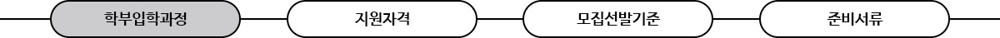
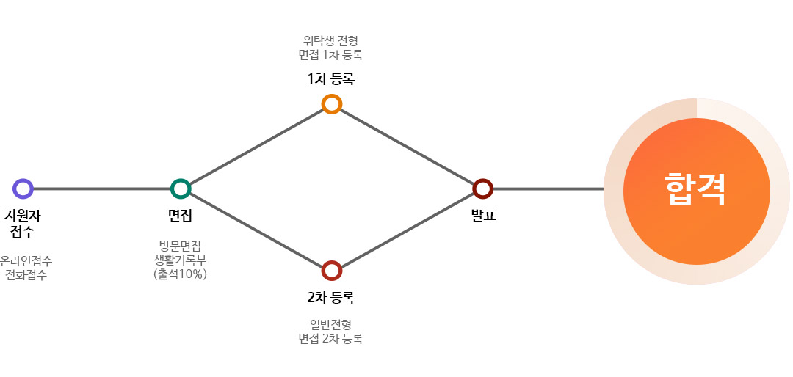
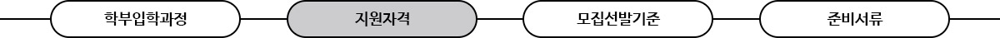
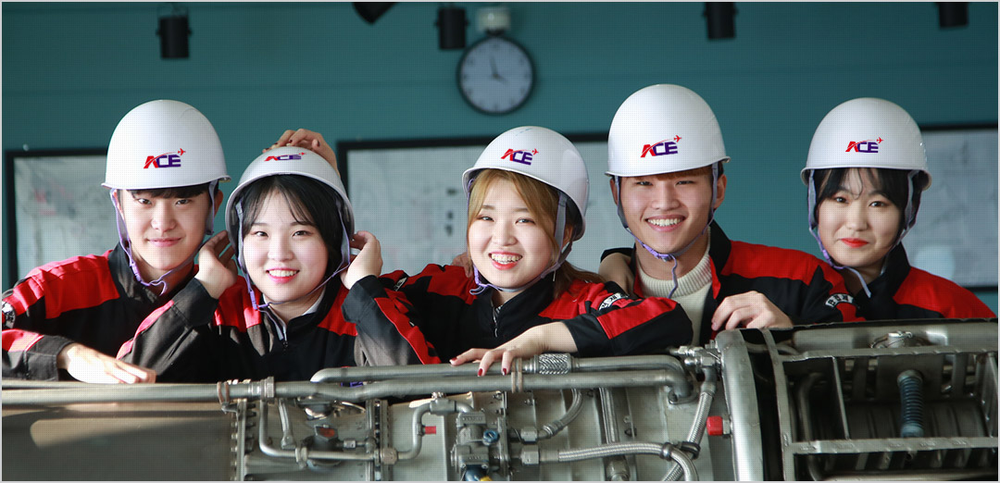
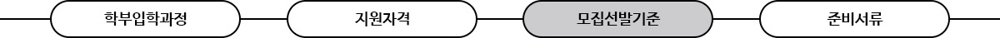
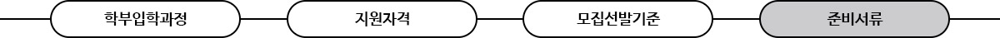

글로벌ACE 국내 최고의 항공교육을 제공하여,
창의적이고 진취적인 항공전문인 육성을 교육목표로 지향합니다.
학점은행제소개
- 항공정비전공
- 자격증 취득부터 취업까지,
항공정비사가되어 항공산업의 에이스가 되어보세요! - 항공정비전공 소개
- ACE항공직업전문학교에서 항공정비과정을 졸업과
동시에 항공공업전문학사 학위를 취득하고,
진출하는 분야는 군 부사관, 군무원,
학사편입, 항공사 등으로 진출 및 취업하게 됩니다.
에이스항공의 소수정원제, 책임제, 취업보장제을
통하여 2년간 소정의 항공정비 학업과정을
날로 발전하는 첨단 항공기술의 학습과 실습을
충실히 연마하는 동시에 실무에 원만히 적응할
수 있는 능력배양과 인성교육을 합니다.
-
열정으로 하늘의 꿈을 이루자! 에이스항공직업전문학교의 항공정비전공 선발은 학생의 인성 부분을 최우선시하여 면접을 통해 선발합니다.
꿈에 대한 열정이 있다면 도전하세요. 항공정비사의 에이스가 되는 날까지 함께 하겠습니다.-
지원자접수
접수를 하시면, 상담 및 면접 일정을 위한 안내 문자 또는 전화를 드립니다.
-
면접
생활기록부를 지참하시면, 보다 정확하고 체계적인 상담이 가능합니다.
진로 및 적성 상담을 통해 자신의 적성과 맞는지 그리고 항공정비전공의 미래를 알아보실 수 있습니다. -
1차(위탁생 전형) / 2차(일반전형) 등록
꿈이 있다면 도전하세요! 언제나 에이스항공이 하늘 위의 빛날 여러분들의 꿈을 응원합니다.
-
합격
발표는 유선상, SMS 로 안내 드리며, 홈페이지에서 합격자 확인이 가능합니다.
-
지원자접수
-
열정으로 하늘의 꿈을 이루자! 에이스항공직업전문학교의 항공정비전공 선발은 학생의 인성 부분을 최우선시하여 면접을 통해 선발합니다.
꿈에 대한 열정이 있다면 도전하세요. 항공정비사의 에이스가 되는 날까지 함께 하겠습니다.-
지원자격
- 고등학교 졸업자 또는 졸업예정자
- 검정고시 합격자
- 외국고교 졸업자 ( 총 12학년 이상 이수)
- 기타 교육법에 의한 동등 이상의 학력소지자
- 전문대 및 대학중퇴자 또는 졸업자
- 타 대학 수시/정시 지원자 또는 합격자(중복지원가능)
-
지원자격
-
열정으로 하늘의 꿈을 이루자! 에이스항공직업전문학교의 항공정비전공 선발은 학생의 인성 부분을 최우선시하여 면접을 통해 선발합니다.
꿈에 대한 열정이 있다면 도전하세요. 항공정비사의 에이스가 되는 날까지 함께 하겠습니다.-
선발기준
과정명 선발기준 교육기간 항공기계정비과정 항공정비전공 공업전문학사 색맹,색약이 아닌자
신체상 결격 사유가 없는자
교정시력 0.7 이상
문신자 선발제외항공기계시스템정비과정 항공정비과정(면허) 항공부사관과정 항공기계정비과정(해외유학) 항공안전공학과정(비파괴검사) 항공정비공학과정(학사학위) 항공정비공학전공 공학사 -
평가점수
학생부성적, 수능성적 및 검정고시 성적 미반영
기초학업능력평가(20%) + 면접(70%) + 신체검사(10%)
※기타 모집기준은 온라인 문의 게시판 또는 032-715-7476으로 문의 바랍니다.
-
선발기준
-
열정으로 하늘의 꿈을 이루자! 에이스항공직업전문학교의 항공정비전공 선발은 학생의 인성 부분을 최우선시하여 면접을 통해 선발합니다.
꿈에 대한 열정이 있다면 도전하세요. 항공정비사의 에이스가 되는 날까지 함께 하겠습니다.-
지원자격
- 고등학교 졸업(예정자) :졸업증명서 2매, 증명사진 1매
- 검정고시 합격자 :검정고시 합격증명서 2통, 증명사진 1매
- 타 대학 자퇴 및 졸업생 :졸업증명서 2통, 증명사진 1매, 제적증명서 2통
- 해외학교 졸업자는 입학관리처로 별도 문의 (032-715-7476 또는 온라인게시판)
- 입학 시, 장학금 해당자는 장학금 신청기간 내 서류 제출
※ 준비서류는 입학 후, 일괄 제출
-
지원자격
도전은 아름답습니다!
에이스항공에서 도전하세요!
믿을 수 있는 교수님들과 함께 하게 되어 기쁩니다.
에이스항공직업전문학교의 책임 프로세스와 취업컨설팅을 적극 활용하여
자격증 취득과 영어실력을 향상시키겠습니다. 원하는 항공사의 항공정비사가 되어
항공산업을 이끌어갈 글로벌 인재가 되고 싶습니다.